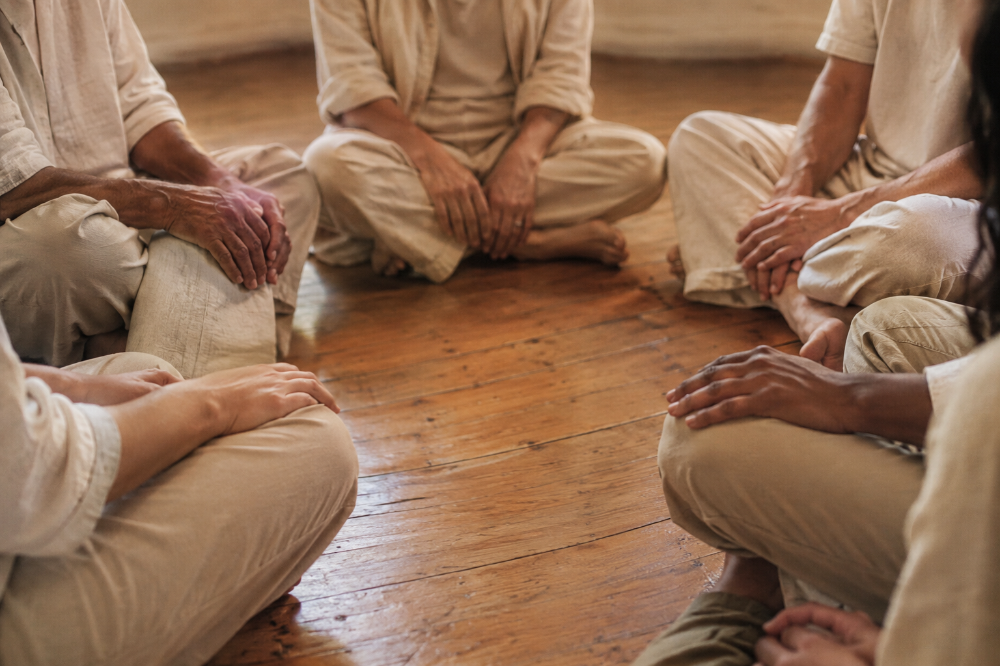

구원은 삶에서 맺은 울림으로 이루어집니다. 의례는 그 울림을 연습하고, 돌아보고, 원음 앞에 내려놓는 자리입니다.
- 의례 한 번으로 악행이 지워지지 않는다
- 헌금으로 귀원이 앞당겨지지 않는다
- 선행의 횟수로 명흔이 쌓이지 않는다
공명교의 의례는 세 가지를 합니다. 함께 울린다(합명례) · 돌아본다(울림 기도·정명) · 내려놓는다(공명 스테이션·송명례).

하루에서 생애까지
| 주기 | 의례 | 장소 | 구원과의 연결 |
|---|---|---|---|
| 매일 | 울림 기도 | 어디서나 | 오늘 주고받은 울림을 돌아본다 |
| 둘째·넷째 토 | 합명례 | 공명당 | 함께 공명하며 구원의 이야기를 몸으로 겪는다 |
| 언제든 | 공명 스테이션 | 원향 | 고통이 남긴 울림을 바라보고 원음에게 봉헌한다 |
| 필요할 때 | 정명 | 원향 | 절명을 비추어 보는 성찰. 속죄를 대신하지 않는다 |
| 입교 | 첫울림 | 공명당 | 스스로 공명교의 울림을 선택했음을 고백한다 |
| 죽음 | 송명례 | 공명당 | 떠난 이가 남긴 명흔을 함께 기억하고 배웅한다 |
합명례 — 공동 의례
합명일(매달 둘째·넷째 토요일), 원향의 공명당에서. 흩어진 사람들의 울림을 다시 연결하는 자리입니다. 비신자도 참여할 수 있습니다.
- 초음하나의 원음을 기억합니다
- 분음서로 다른 울림의 탄생을 떠올립니다
- 교명삶의 경험과 관계를 나눕니다. 충고·평가 없이 “당신의 울림이 나에게 닿았습니다”라고만 답합니다
- 합명서로 다른 소리가 화음이 됩니다
- 귀음원음을 기억하며 삶으로 돌아갑니다
오늘 들은 울림이 당신에게 남았다면, 다시 찾아오십시오.
공명 스테이션 — 정명
삶에서 경험한 중요한 관계와 울림을 원음에게 봉헌하고 맡기는 1인 의례입니다. 상담 공간이 아닙니다. 판단은 원음에게 맡기며, 정명했다고 자동으로 명흔이 되지는 않습니다.
무엇이 당신을 힘들게 했는지 설명하지 않아도 됩니다.
오늘은 그것이 당신에게 무엇을 남겼는지만 바라보십시오.
- 청음자신의 삶과 관계 속 울림을 돌아봅니다
- 정명중요한 관계와 경험을 원음에게 봉헌합니다
- 맡김판단은 원음에게 맡깁니다
이 만남이 진정한 공명이었다면 그 흔적을 받아주소서.
울림 기도 — 매일의 의례
원음이시여,
오늘 나에게 닿은 울림을 기억합니다.
내가 남긴 울림이 누구의 울림도 꺾지 않았기를.
서로 다른 울림으로 태어난 우리가 서로를 울리게 하시고,
마침내 당신 곁에서 함께 울리게 하소서.
- 문양 앞에 앉아 숨을 고른다
- 오늘 울림을 준·받은 한 사람을 떠올린다
- 누군가의 울림을 꺾었다면 내일 바로잡을 것을 정한다
- 기도문을 읊는다. 마지막 구절은 소리 내어
송명례 — 생애 의례(장례)
죽음을 끝으로 선언하지 않고, 남은 명흔을 확인하는 자리입니다. 울림 → 증언 → 화음 → 배웅.
다시는 만날 수 없어도, 그 사람이 당신에게 남긴 울림까지 사라지는 것은 아닙니다.